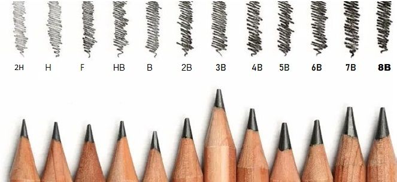
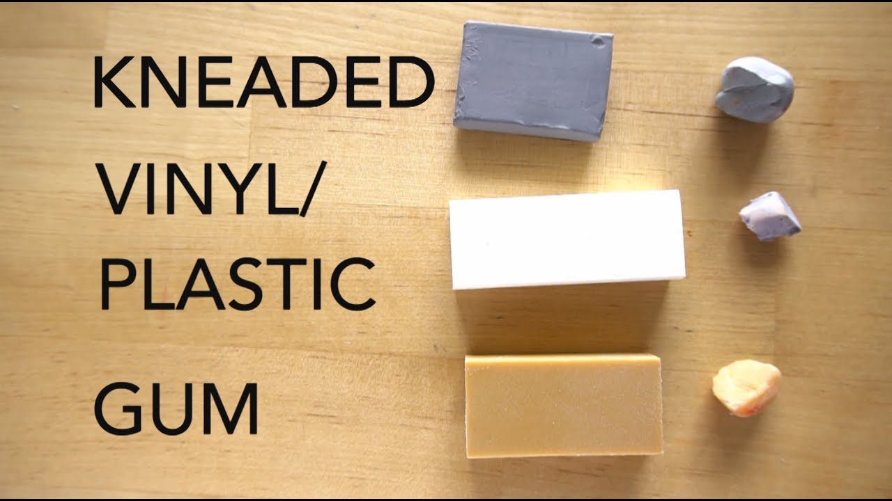

Sketching Tools
1- Pencils
- Many sets include pencils with harder graphite (9H) through softer graphite (8B) Harder graphite makes lighter marks and keeps a sharp tip longer, while softer graphite makes a darker mark, but needs constant resharpening 
{kind=link}
2- A Sketchbook
- It's very important to exercise daily and bring out all your ideas that's why we all need an active sketchbook with hardcover and has plenty of pages
- ⇒ PAPER WEIGHT
- - The weight of the paper refers to how much a ream (500 sheets) of that paper weighs For most papers, the weight of the paper will be directly related to the thickness of the paper. (It should be noted that some papers may have a heavier weight but actually be thinner.) For example, 80 lb. paper will typically be thicker than 60 lb. paper, while 100 lb. paper will be heavier than 80 lb. paper.
- ⇒ ACID FREE
- - Paper that is “acid free”, without going into all of the technical details, will stand “the test of time”. This paper is will not yellow over time and is more resistant to fading that can occur when exposed to UV light.
- ⇒ DRAWING PAPER
- - Medium tooth paper that is suited for drawing with a variety of drawing media including graphite, charcoal, and colored pencils. There a ton of options for drawing papers, but Strathmore papers are recommended.
- ⇒ CHARCOAL PAPER
- - Heavier tooth paper that is lightweight – almost semi-transparent.Excellent for creating texture.
- ⇒ BRISTOL PAPER
- - Smooth tooth paper that is heavier (think cardstock). This paper is quite rigid and is excellent for creating smooth gradations of value or detailed line work with ink
3- Eraser
- Aren't just for mistakes 
{kind=link}
- ⇒ RUBBER ERASER
- - Your standard eraser for erasing graphite. This eraser uses friction to remove any material from the surface.
- ⇒ KNEADED ERASER
- - This eraser lifts material from the surface, instead of using friction to remove it. It can be pulled and fashioned into different forms to create specific marks. This eraser gets dirty over time, but can be cleaned by pulling and “kneading” it
- ⇒ GUM ERASER
- - “The Crumbler”. This eraser is great for removing media from surfaces that are sensitive to tearing. A gum eraser removes the medium through friction, but crumbles as it does so – preserving the surface.
- ⇒ PLASTIC ERASER
- - This eraser is the toughest of the bunch. It can erase almost anything. But be warned – this eraser can tear the paper if you’re not carefuL
4- Charcoal or Conté
- Charcoal provides a broader range of value and mark-making than what’s possible with graphite. The manner in which marks are made is different as well.
- Charcoal comes in both stick and pencil form. Sticks of charcoal are usually either “vine” or “compressed”. Vine charcoal is softer and produces lighter marks, while compressed charcoal – which is concentrated, produces darker marks
- Charcoal pencils can be sharpened like graphite pencils, making them great for details. *Conté is similar to charcoal in richness of color – however the makeup of the material is different. Charcoal is burnt organic material, while conté is made of clay constituents.*
Painting Tools
1- Brushes
- brushes are the basic of painting whether water-painting or oil-painting. they vary in type , shape and size , there is ultimate brand and types of branches ⇒ visit the link to know all about it
2- Watercolor
- Acrylic and gouache are popular paint choices for fine art and illustration. While both are water-based paints
-- Acrylics will adhere to almost any surface, but the most common are canvas, wooden panels, metal and paper. Acrylics can also be used on internal or external walls, making it very suitable for murals. Wet acrylics are water-soluble, but once dry, they are waterproof and durable in most environmental conditions.
-- While gouache has a long history of use by artists, its flexibility and reproducibility has made it more popular for illustration than fine art in modern times. Once dry, gouache remains soluble to water, allowing for blending even after the paint has dried. This also means that finished gouache paintings should be protected behind glass